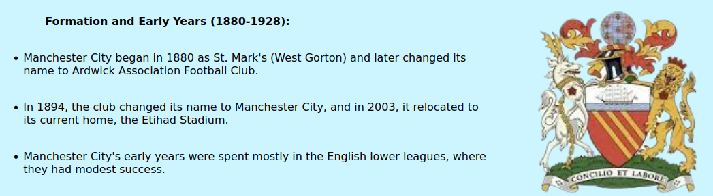

History

Club Records
Club Legends
Fun Facts
- 1. Man City and their fans are often referred to as 'Citizens' or 'Cityzens'.
- 2. Manchester City was known as Ardwick FC for the first seven years of its existence.
- 3. Glyn Pardoe, who was 15 years 314 days old when he appeared for City against Birmingham City in 1962, was the club's youngest player.
- 4. Man City became the first Premier League class in history to win the title with 100 points in a single season (2017-18).
- 5. Manchester City won the English Premier League with a 19-point lead in 2017-18, the greatest points margin in EPL history.
- 6. Manchester City scored over a hundred goals in 1957/58, only to concede 100 goals in the same season.
- 7. Manchester City custodian John Burridge was the oldest Premier League player, at 43 years, 4 months, and 26 days.
- 8. Since 2003, the squad has played its home games at Etihad Stadium. Prior to it, their home pitch was Maine Road.
- 9. In 1970, Manchester City won their first European trophy, the European Cup Winners' Cup.
- 10. The traditional colors of Manchester City FC are sky blue and white.
- 11. Man City's biggest-ever victory occurred in the FA Cup in October 1890 when they defeated Liverpool Stanley 12-0.